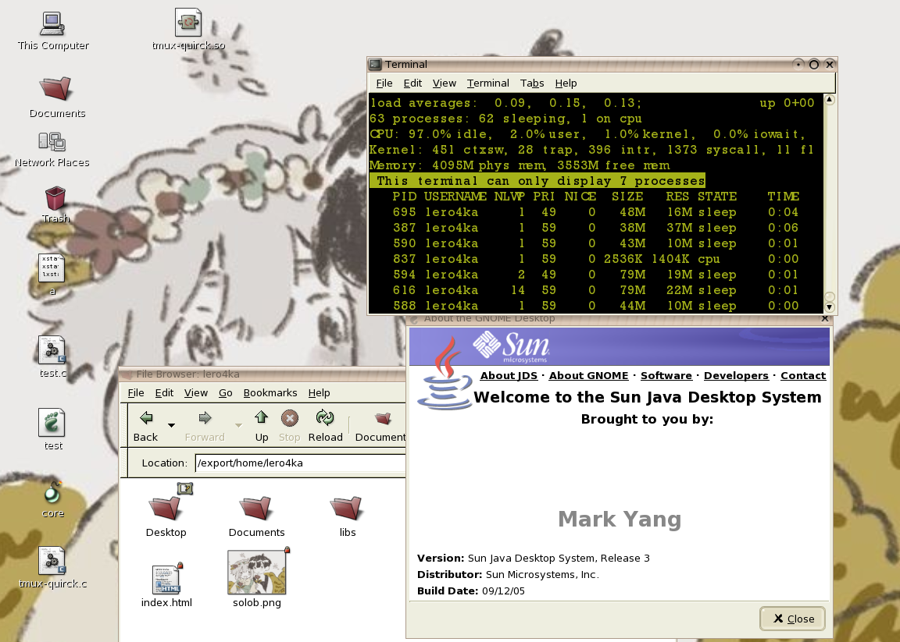

↓ Posts in a row ↓
| SIGSYS madness — Mysterious Vault, DUCTF 2025 |
| apk(8) without root via symbol overriding |
I am Nikita Donskov, 18 y.o. CS student at ItHub, Russia. In my free time I like to experiment and learn how stuff works. I am not really into cutting edge technologies and prefer rock solid & time-tested things. Also I am REALLY lazy
I find computer science a wonderful & mysterious world. Let's explore it together!
One of my posts
I was using Solaris systems for a long time until I discovered Linux. I find UNIX design awesome
This is the Unix philosophy: Write programs that do one thing and do it well. Write programs to work together. Write programs to handle text streams, because that is a universal interface.

It blows my mind how the principles of building OSes designed back in 70's are still actively used today. There are no mobile phones (Android is based on Linux, Apple's Darwin is based on BSD), IoT, embedded devices, Wi-Fi routers, modern web infrastructure and other tech without UNIX. The only non-UNIX thing still actively used today that comes to my mind is Microsoft Windows
open(2), write(2), read(2), close(2), repeat!
Daemons, they call them. They perform action without user interaction. Monitoring, logging, notifications. Primal urges, repressed memories, unconscious habits. They're always there, always active
© Nikita Donskov, 2025